Play
在遊戲開始時，被汪店長雇用的玩家將來到這座位處山林之中的餐館。由於餐館中所用的食材都必須自己張羅，因此接下來就要拿著狩獵道具，跟著汪店長打獵囉！
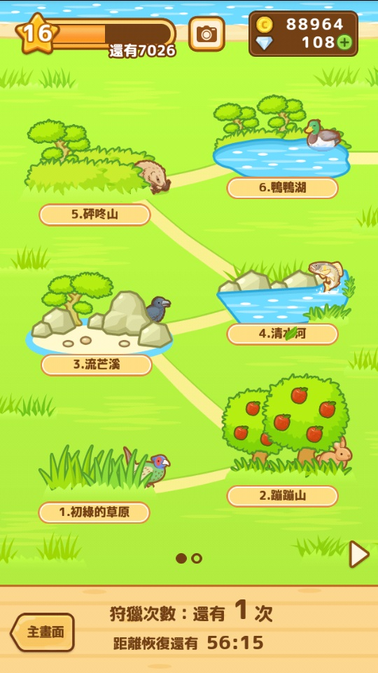
經過一番等待後，獵物出現了！此時可以選擇「迅速」或是「慎重」兩種獵捕手段。迅速的獵捕可以快速的獲取較少的食材。而選擇慎重的話，則會派出汪店長進行一場獵捕小遊戲。
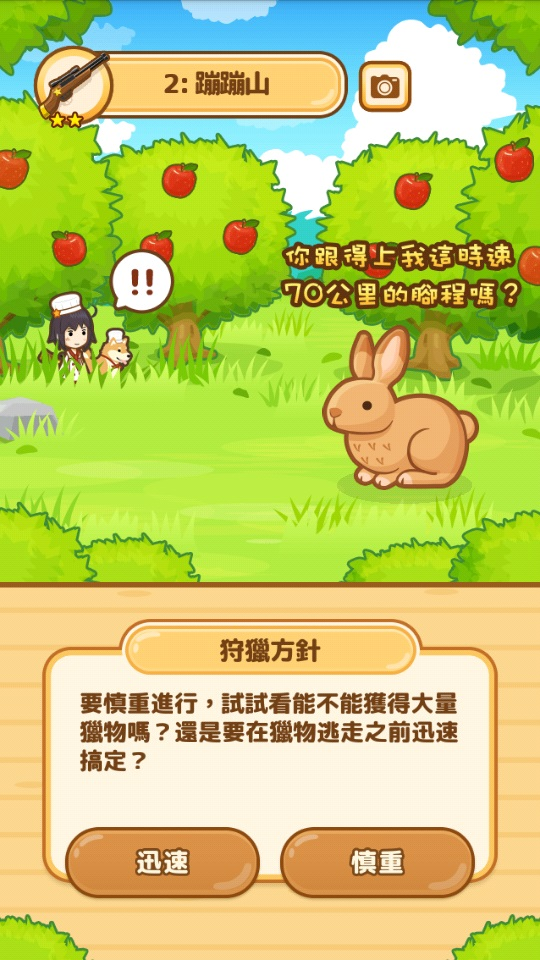
在小遊戲中，必須依照路況選擇左右路徑、避開石頭，並在時間限制以內追上獵物。雖然失敗的話就什麼也得不到，但成功的話就能獲得 1.5 倍的食材！
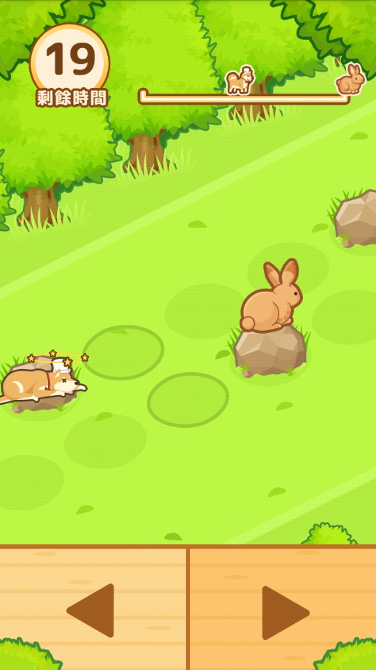
獲取獵物後，汪店長會說明如何將獵物處理成可以烹調的食材。
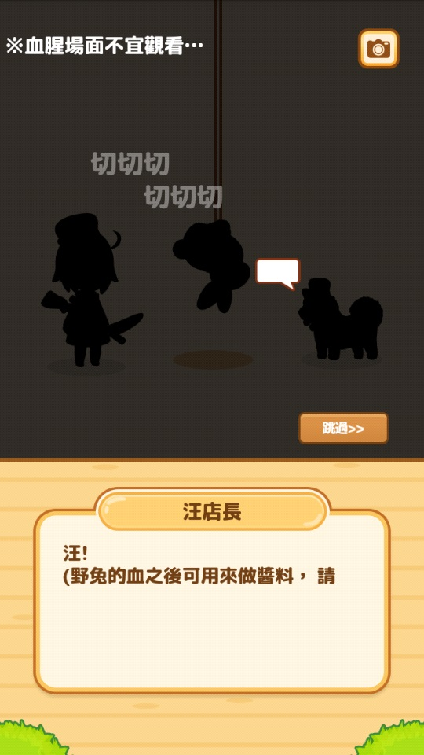
接著就可以回到餐廳，開始料理食材啦！料理共分為煮、烤、加工、其他四種方式，不同的餐點可能需要不同的料理手段，選擇餐點、確認擁有足夠的食材後便會自動開始料理。料理需要時間，而每一種料理所需要的時間都不同，待時間到了之後再回到爐子上即可收取料理。

不過身為一名廚師，滿足顧客才是最重要的，因此可以先確認客人的點餐內容、再製作對應的料理給客人享用。在客人享用了美味的料理後，就能獲得對應的金幣與經驗值囉！
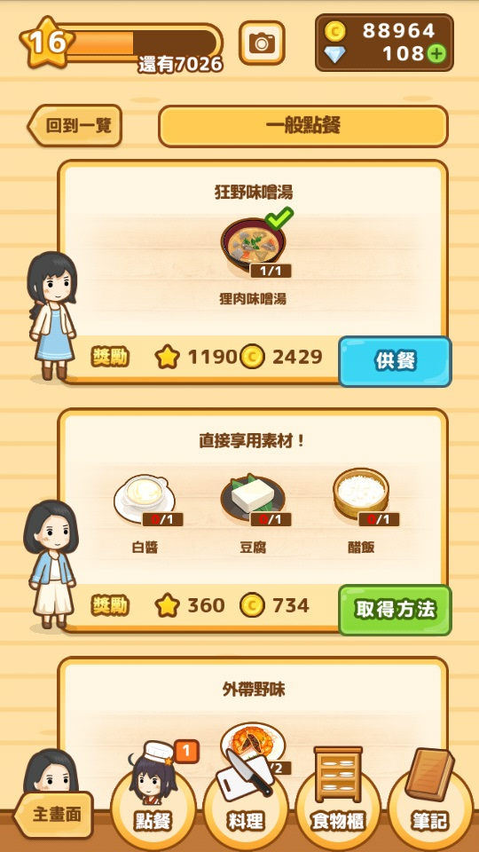
而除了一般點餐之外，更重要的是主線劇情的「重要點餐」。在重要點餐之中，客人基於各自的原因會希望吃到某些使用到新食材的料理，不過捕捉新食材需要到新的獵場，而進入新獵場又需要擁有對應的狩獵道具，因此要先藉由一般點餐來提升等級，達到指定等級後就可以到商店購買新的狩獵道具、開啟新獵場了！

滿足了重要點餐的客人之後，不僅可以獲得大量的經驗值與金幣，還能夠獲得新的食譜！如此一來就能製作更高級的料理給一般點餐的客人、獲得更高的經驗值與金幣做為報酬了！
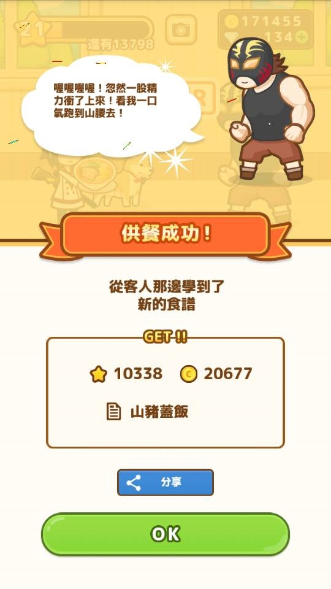
說到獵場，除了發現獵物之外，也可能碰上綠爺爺跟你分享植物食材、甚至是送你用來補充狩獵體力的「紅乳牛能量飲料」，或是碰上看起來像是黑道、卻喜歡出一些與獵物相關的機智問答的墨鏡大叔。如果順利答對墨鏡大叔的問題，還能夠獲得特殊的食譜喔！
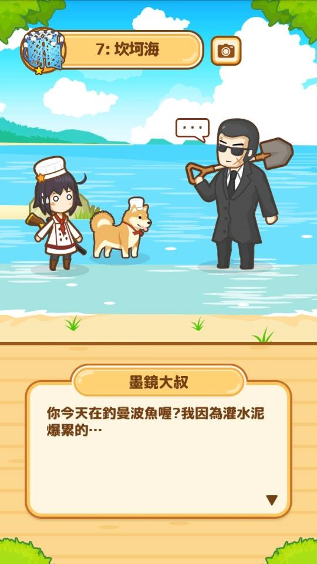
與動物食材一樣，植物食材也是會出現在特定的幾個獵場。除了狩獵的方式，每隔一段時間汪店長也會隨機找回一些植物食材。如果植物食材出現短缺，直接到商店購買也是個快速又便利的選擇。
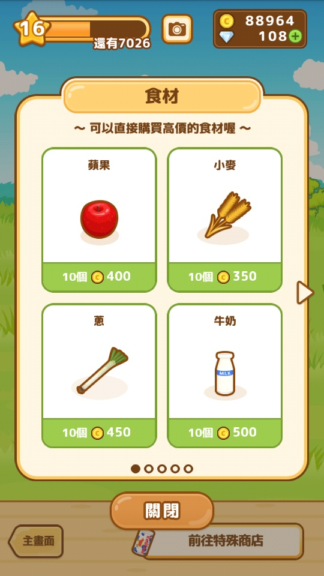
此外還有兩個大量獲得植物食材的手段，一個是綠爺爺會請玩家藉由社群分享來幫忙宣傳農場，分享後進行獲取食材的小遊戲；另一個是小鳥會叼來金骨頭，只要觀看完廣告就能獲得，而使用金骨頭後，汪店長就會興奮地帶回大量的植物食材喔！
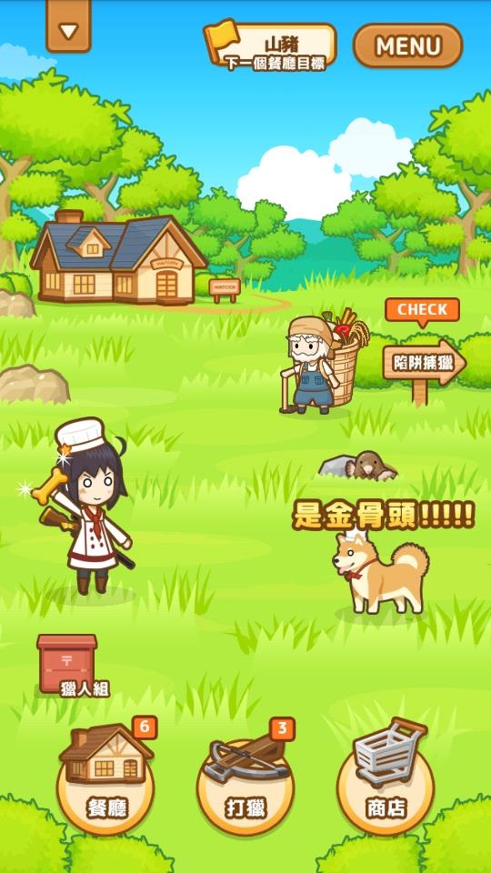
而除了等級與重要點餐這兩個目標之外，汪店長也會設立階段性的餐廳目標，隨著餐廳目標的達成，將能夠慢慢地擴張餐廳，並開啟狩獵道具改造、陷阱捕捉、獵人檢定等新功能，在食材獲取的上就更加多樣了。
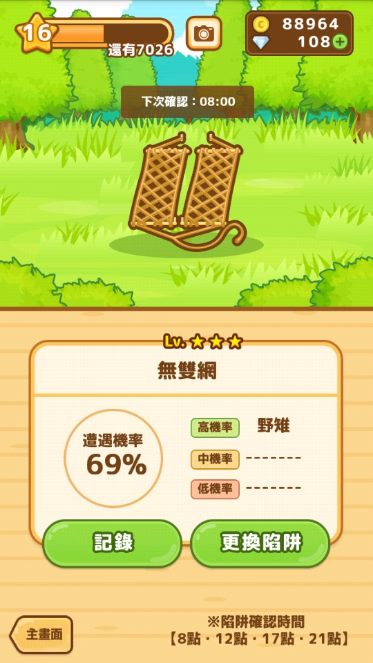
本作是一款循環簡單、容易上手的休閒遊戲，只要按照自己的步調打獵、經營餐廳即可。可愛而洗鍊的美術風格，即使在呈現「狩獵」這樣的題材也沒有絲毫血腥，從內容上也可看出本作花費了相當多的心思來說明捕捉獵物、處理食材、以及介紹料理等，創造了絕佳的帶入感，也消弭了現實與虛擬間的隔閡。
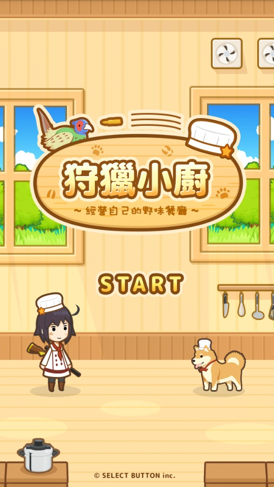